lanes5+6
one-channel pair now trips MTS/ring input errors. The lower-MTS/ring
SignalTap checkpoint localizes the visible error sideband to MTS1 before
hit_stack1/ring sees the reject. No FEB/SWB host-disk
Mu3e Demo OPQ, 100 kHz end-to-end claim is valid yet. Under the active
N_HIT=255 profile, a 256-hit source cluster must deliver
255 hits and account exactly one OPQ hit drop. The SWB OPQ image now has
timing-clean programming and host-visible SC replies, so SWB SC return is
no longer the first blocker.
Current Read
The strongest blocker is not the deprecated injector path or XML mapping.
The active injector is the Phase-5 mutrig_injector_0 path and
the XML split is SMB3 for ASICs 0..3 and SMB5 for ASICs 4..7. The lower
side fails because two real lower streams together make MTS assert
tserr before the ring stage; the ring
inerr_count is therefore a real timestamp-delay failure,
not a ring-local decode bug.
The fixed Phase-6 cycles explicitly loaded config_smb3_tdc.txt
and config_smb5_tdc.txt. The original timing-closed bounded
cycle measured P6B010 ring_inerr_delta=535108; the later
SignalTap rerun measured ring_inerr_delta=535373,
mts_discard_delta=0, and LVDS error/DPA deltas were zero.
The fresh continued cycle
phase6_long_runs/20260430_live_continued_cycle1 reproduces
the split: P6B006 lane5 and P6B007 lane6 pass alone with zero ring input
errors, while P6B010 lower lanes5+6 one-channel fails with
ring_inerr_delta=563053. P6B020 full-channel remains the
expected fail, and P6E010 pulse-high 3 is clean but underfilled. Reduced
evidence:
phase6_timingclosed_cycle1_20260430.md.
The follow-up lower ASIC5/6 sweep distinguishes lane-local health from
cross-ASIC failure. ASIC5/lane5 and ASIC6/lane6 each pass one-channel
pulse-high 4/5 runs alone with zero ring input errors. The two real lanes
together fail at pulse-high 4/5, and ASIC6 ext_trig_offset
values 0..15 all fail. A two-lane emulator reference through
the same lower MTS/ring path passes after 50 ms post-sync/pre-inject
settle. Reduced sweep evidence:
phase6_lower56_cross_asic_sweep_20260430.md.
A fresh all-real-lane 1 s rate monitor on 2026-05-01 is a blocker
checkpoint, not a pass. It used the toolkit-equivalent rate preset
metadata, all eight real LVDS lanes, pulse_interval=1250,
and pulse_high=4. LVDS error and DPA-unlock deltas were
zero, LAST_INTERVAL_TOTAL_HITS=11851571, and
hist_drop_delta=0, so real hits are reaching the histogram.
The same window still reports MTS_DISCARD=1,
ring_inerr_delta=2787809, and
ring_overwrite_delta=79066. The SC per-bin readback returned
zero bins despite the nonzero last-interval counter; that is a tooling
artifact from slow SC reads crossing the ping-pong histogram bank, so the
plotted rate artifact must come from the burst System Console/toolkit
path or a faster frozen-bin capture.
The 2026-05-01 Qsys patch fixes a separate observability bug: the
histogram source now defaults to pre-RBCAM hit_type1,
histogram_statistics_0 has two fill inputs with global
{ASIC, channel} keys, and the lower MTS stream is split
into both hit_stack_subsystem_1 and
histogram_ingress_bridge_1. The lower bridge
pre_out is explicitly drained so the tap copy cannot
backpressure MTS. Authentic integration simulation passed with all eight
lanes visible: each lane reported 20 MTS channel-16 payload hits and 20
histogram flushes, with zero histogram drops.
The full-FEB generated-image blocker is now closed for emulator evidence.
The stale image tied lower histogram_statistics_0.fill_in_1
off, giving a physically sharp four-lane rate in an all-lane emulator
run. The correct lower bridge address is Qsys byte
0xAC10..0xAC20, visible through the SC hub at word
0x0AB04..0x0AB07; 0x0AC10 was a bad SC-word
premise. The newly compiled/programmed top_nostp_pipe SOF
checksum 0x13E73362 exposes both bridge UIDs
(0x0AB00 upper and 0x0AB04 lower, both
0x48495342) and passes the 1 s emulator mask matrix: all
lanes 10 kHz gives 79984 histogram hits, upper-only gives
39996, lower-only gives 39996, all lanes
100 kHz gives 798728, and the dual-MTS delay-profile smoke
gives 409080; all have zero histogram drops. This is a
wiring and counter observability pass, not a real MuTRiG PLL lock claim.
The first all-channel plotted rate-bin checkpoint now uses the
System Console/JTAG histogram dump path with both histogram ingress
bridges forced to the pre-RBCAM stream. The emulator periodic
r53 run produces nonzero counts in all 256
{ASIC, channel} bins and zero counts at the first
error gate (hist_drop=0,
MTS_DISCARD=0, ring_inerr=0). It is still an
anomaly for rate closure: RBCAM overwrite/cache counters are nonzero, and
the bin sum and per-channel balance do not match a uniform 100 kHz/channel
source. The earlier cluster-size=32 test is explicitly
invalid as an all-channel cluster because the hardware field is five
bits, so 32 wraps to zero and normalizes to one channel per ASIC.
The latest direct probes rule out two weaker explanations. First, opening
the MTS expected-latency gate from 2000 to 4000
and 65535 still leaves large lower-pair ring input-error
counts, so the reject is not just a small positive delay tail above the
nominal window. Second, header-synchronous injection on lower header
channels 5 and 6 still fails for the real
pair, while the same header mode passes for lane5 alone and lane6 alone.
The pair failure is therefore still cross-ASIC even when the injection is
locked to MuTRiG frame headers.
The 2026-05-01 head-sync histogram plots add a sharper physical split.
ASIC5 default production-lapse delay is not delta-like: 81759
JTAG-bin hits occupy six bins with a 44.914% peak. Tuning
ASIC5 to cnt/vcodelay/hitlogic=52/18/25 improves it, but
production lapse still leaves two bins at 79.171% and
20.829%. The same physical ASIC5 setting with
--mts-bypass-lapse on collapses to one bin
(91574 hits, 100% peak), while ASIC6 default
production-lapse also collapses to one bin at 904 cycles.
This is not a pure MuTRiG PLL unlock signature. It points at the MTS
lapse/overflow transform, or the compile-time lookback/padding threshold
feeding that transform, before blaming lane5 LVDS or TDC physics.
The all-eight header-sync delay scan changes the acceptance handle. The
useful loss proxy is the delay population outside the rbCAM
0..2000 cycle ingress window. Raw MTS discard is kept as a
caveat because the MuTRiG fine-counter one-hot can be broken while the
coarse timestamp remains usable. Therefore a sub-1% MTS discard is not a
hard fail when the delay histogram is sharply in window; the next blocker
to clear is any nonzero rbCAM drop proxy or underflow/overflow tail.
The MTS IP now has a reviewed runtime CSR for that exact hypothesis:
overflow_lookback_8ns at CSR word 5. The FEB
runners expose it as --mts-overflow-lookback and record the
readback in stage snapshots. This is not a substitute for the physical
MuTRiG scan; it is the control that separates a PLL/TDC response from an
MTS epoch-disambiguation response in the next ASIC5 production-lapse
A/B sweep.
The lane6/7 zero-point checks are invalidated as tuning evidence. A
MuTRiG with vnvcodelay=0 should produce no TDC-injection
hits. The captures labeled vncnt=0,
vnvcodelay=0, and vnhitlogic=0 therefore prove
a stale configuration, bad override, or run-sequence artifact unless the
manifest shows that a nonzero setting was actually loaded. Reduced
lane6/7 evidence remains archived only as bad-evidence input:
phase6_lane67_zero_point_20260430.md.
The first frame-boundary capture is a useful frame-format debug example
but not closure-grade. Because it is labeled vco000, it must
be rerun with ASIC-specific nonzero PLL settings and a full
RUN_PREPARE sequence before it can support P6-BUG-004-H.
The next valid capture must tie a nonempty RBCAM hit_type2
beat to the later FEB hit_type3 frame drain in one deeper
SignalTap window or in a matched simulation/VCD replay. Archived
evidence:
phase6_frame_boundary_lane6_vco000_100k_active_inject_20260430.md
and
phase6_frame_boundary_lane6_vco000_100k_active_vcd_summary_20260430.md.
The lower-MTS/ring SignalTap debug image programmed with checksum
0x16B6BF30 and SOF SHA256
080f92844f868d33e142ce6e576911b728f9364fadd1d9c2824addd7d1cff2b9.
It is an Arria V debug-only image: setup WNS is -0.086 ns
on transceiver_pll_clock[0], within the clarified
about-200 ps FEB debug tolerance, while SWB Arria 10 still requires clean
timing closure. The VCD shows mts1.aso_hit_type1_error and
hit_stack1.hit_type_1_error[0] both first high at
128500 ps. Reduced SignalTap evidence:
phase6_lower_mts_ring_signaltap_20260430.md
and phase6_lower_mts_ring_vcd_summary_20260430.md.
The lower full-channel pair also fails with the MTS expected-latency
window opened to 65535 and at 10 kHz/channel. Channel-mask scans prove
some groups are clean alone, but their union still fails. That points at
a cross-ASIC ordering/epoch interaction in the lower MTS path, not a
single dead lane. Bypassing the MTS lapse transform did not clear it, and
using the E timestamp field made it worse. Pulse-width scans show a hard
threshold: pulse high 3 is clean but badly underfilled, while pulse high 4
has multiplicity but trips MTS/ring errors. The upper pair behaves differently:
lanes1+2 passes at one channel and fails at full
multiplicity.
MuTRiG tuning reference: MUTRIG.md. That page links the local MuTRiG wiki mirror and records the DMON/TDC injection implications used here.
SWB live preflight was superseded after the timing fix in online_sc
11eada541. The new SOF programmed with checksum
0x31A704E1, PCIe recovery restored /dev/mudaq0,
and host-visible SC link-2 reads now return in roughly 68-69 us, including
0x0C000 -> 0x52434D48. That clears the old SC reply blocker.
The later fixed4 SWB image for the mux/subtime pack path also completed
make flow with 0 errors and 298 warnings, programmed
checksum 0x31A72852, and recovered
/dev/mudaq0 plus /dev/mudaq0_dmabuf.
The Mu3e online DMA tools are now deprecated for closure evidence:
swb_dmatest, rw, MIDAS, and libmudaq-backed
utilities are reference-only. The repo-owned
tools/phase6_swb_dma_probe/phase6_swb_dma_probe.py directly
maps /dev/mudaq0 and /dev/mudaq0_dmabuf, records
raw RW/RO registers plus SWB counter sweeps before cleanup, and writes
dma_words.bin for offline reduction.
The direct probe now proves the raw SWB DMA payload path is alive and
repeatable in the stream-datagen configuration. Three fresh 10 s runs
each recorded 2048 nonzero DMA words, 1024
nonpadding words, and 256 event-builder payload words.
Their first payload words differ across runs
(0x00088A0C, 0x0008818F,
0x0008894F), which rules out stale-buffer reuse for this
control. The old FEB/SWB frame reducer reports
raw_payload_no_legacy_frames, which is the expected
interpretation for active musip_event_builder raw 256-bit
payload, not an end-to-end hit-frame pass. The time-datagen path still
records no_dma_words in
post_tool_update_time_datagen_generic_defaultstate and with
all four generic lanes enabled. Source inspection makes that a weak
control: the legacy data_generator_a10 does not guarantee
OPQ-compatible subheader hit-count fields matching the generated hit
body. OPQ hardware counters, real FEB-link host DMA, and disk closure
remain open until the active MuSiP payload is decoded or a real FEB-link
artifact is captured and reduced.
Phase-6 End-to-End Progress
Closure still means the full hardware chain, not just a FEB-local
histogram. The required source proof is 100 kHz injection on all 256
MuTRiG channels with one timestamp per 256-hit source bunch. The active
SWB/ER OPQ profile is Mu3e Demo: N_SHD=128,
N_HIT=255. Therefore the host-disk proof for this checkpoint
is 255 delivered same-timestamp hits plus exactly one accounted OPQ
drop_hit per 256-hit source cluster, with adjacent bunch
timestamps matching the 100 kHz cadence.
| Stage | Status | Gate | Current Evidence | Next Check |
|---|---|---|---|---|
| FEB MuTRiG output | BLOCKED | 256 real channels at 100 kHz/channel must enter FEB DMA-side logic with matching 256-hit timestamps. | The histogram 26.1.8 FEB image compiled at 10:17 on 2026-05-01, programmed at 10:21 with checksum 0x13DD5EC5, and responded with packaged injector UID 0x4D494E4A. After explicit all-ASIC reload and CML 0-8-0 flush, the 1 s high-cycle rate sweep shows the physical threshold: ph1/ph2 silent, ph3 underfilled, ph5/ph6/ph7 near 25.55 Mhit/s with all 256 channels populated, ph8 begins overcount spikes, and ph9+ overfills. The ph8+ shape is consistent with TDC injection-line ringing and second rising-edge pickup on some channels, so rates can approach 2x or land between 1x and 2x. The best rate artifacts are ph6/ph7 around 99.8 kHz/channel with CV about 0.006, but the same runs still classify as MTS-discard failures before full FEB output closure. Earlier lower-pair evidence still applies: ASIC5/lane5 and ASIC6/lane6 pass alone, but the two real lanes fail together; expected-latency sweeps, header-sync pair controls, and ext_trig_offset scans do not clear it. SignalTap shows mts1.aso_hit_type1_error and hit_stack1.hit_type_1_error[0] rising in the same exported VCD window for the bad lower pair. | Use ph6 or ph7 as the current rate-mode pulse-width starting point, then clear the MTS-discard/RBCAM boundary with header-delay delta plots and same-window RBCAM/FEB-frame captures before SWB/DMA disk closure. |
| SWB input path | PASS_SC | SWB must receive FEB data and the SC read/reply path must return host-visible replies from FEB. | online_sc commit 11eada541 compiled timing-clean at all checked STA corners, programmed SOF checksum 0x31A704E1, recovered /dev/mudaq0, and returned host-visible SC link-2 reads: 0x00000 payload 0 and 0x0C000 payload 0x52434D48. | Hold SWB SciFi-hit input proof until FEB emits clean hit frames; the SC path itself is no longer the blocker. |
| SWB OPQ to DMA | PARTIAL_DMA | Merged hit words must drive the existing SWB DMA outputs with OPQ accounting matching the active hit-limit profile. | packet_scheduler ed249da carries the 26.5 Mu3e Demo signoff merge; the underlying 25e204c UVM case proves N_HIT=255 delivers 255 hits and records exactly one drop. The online_sc fixed4 image compiled timing-clean, programmed checksum 0x31A72852, and recovered /dev/mudaq0. Three fresh 10 s repo-owned stream-datagen runs classify raw host DMA as dma_payload_nonzero with 2048 nonzero words, 1024 nonpadding words, and 256 event-builder payload words each. First payload words differ across runs: 0x00088A0C, 0x0008818F, and 0x0008894F, so this is not stale-buffer reuse. The old frame reducer correctly reports raw_payload_no_legacy_frames for this musip_event_builder payload. | Decode the active MuSiP/OPQ payload contract, clear the still-empty time-datagen path, then run real FEB-link captures and require 255 delivered hits plus one OPQ-accounted drop per 256-hit bunch before any FEB-link host-disk claim. |
| Host DMA buffer | PARTIAL_RAW_DMA | /dev/mudaq0 must receive SWB DMA data from the OPQ/event-builder chain. | PCIe recovery passed and /dev/mudaq0 plus /dev/mudaq0_dmabuf are present after the fixed4 SWB programming. Mu3e online software is deprecated as Phase-6 evidence; swb_dmatest, rw, MIDAS, libmudaq-backed utilities, and production cleanup flows are reference-only. The tools/phase6_swb_dma_probe path directly mmaps the devices, captures raw RW/RO registers and counter sweeps before cleanup, and now distinguishes raw 256-bit payload DMA from legacy frame decode. | Use only repo-owned direct-MMIO tools under tools/ for closure captures. If an online utility disagrees with raw registers, trust the repo-owned probe and hardware evidence. The next host-buffer gate is a real FEB-link run with persistent disk artifact and offline timestamp/hit-count reduction. |
| Disk/offline timestamp check | BLOCKED | Mu3e Demo OPQ: every decoded bunch must contain 255 delivered hits with identical TS, OPQ must account exactly one dropped hit from the 256-hit source cluster, and adjacent bunch TS spacing must match 100 kHz. | No valid disk artifact has been produced yet for the 256-channel, 100 kHz/channel Mu3e Demo OPQ requirement. The Phase-6 DMA reducer now reports raw_payload_no_legacy_frames when host DMA contains nonpadding musip_event_builder payload without old FEB/SWB frame headers. Three 10 s stream-datagen captures prove the raw SWB DMA buffer changes per run, but they are controls only and do not contain decoded real MuTRiG FEB-link bunches. | Extend the reducer for the active MuSiP payload or capture legacy FEB-link frames, then require 255 delivered same-timestamp hits plus one OPQ-accounted drop before disk closure. |
Required Histogram Artifacts
Passing review requires plotted artifacts, not raw JSON alone. The
channel-rate plot must come from a 1 s, 256-bin histogram accumulation,
and the delay plot must be a header-synchronous kind=delay
capture where the in-band delay collapses toward a delta function inside
the rbCAM 0..2000 cycle accept window. The ratio of delay
hits outside that window is the rbCAM ingress discard proxy and is more
useful for latency closure than raw MTS discard. Stage CSRs are
intentionally shown as rates over the measured read window, because those
counters are not sampled simultaneously. The histogram bins are the
precision evidence for per-channel and per-ASIC rate.
The live histogram CSR setup must use the FE SciFi toolkit presets from
toolkits/fe_scifi/board_bring_up/fe_scifi_board_bring_up_project.tcl.
For delay closure, the active pipe image is the only valid lower-side
source: debug_1 is upper MTS ts_delta and
debug_2 is lower MTS ts_delta. Older
non-pipe/latency images with upper-only debug wiring are rejected for
all-eight-ASIC delay conclusions.
{kind=link}
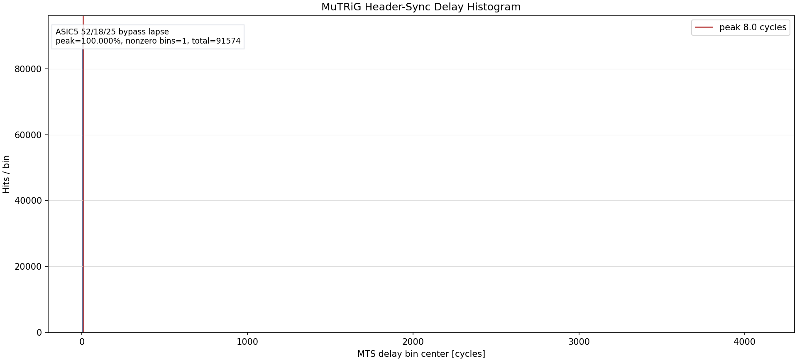
{kind=link}
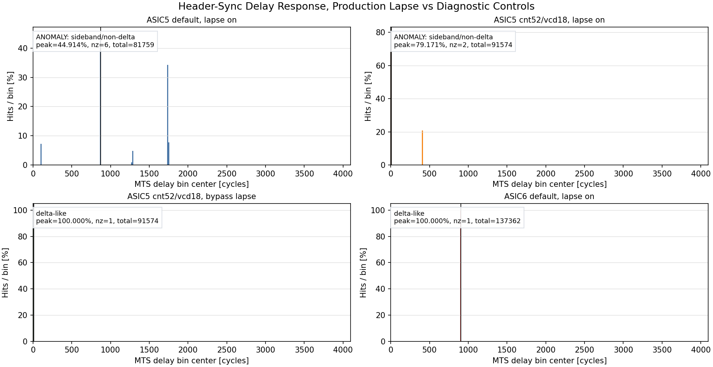
{kind=link}
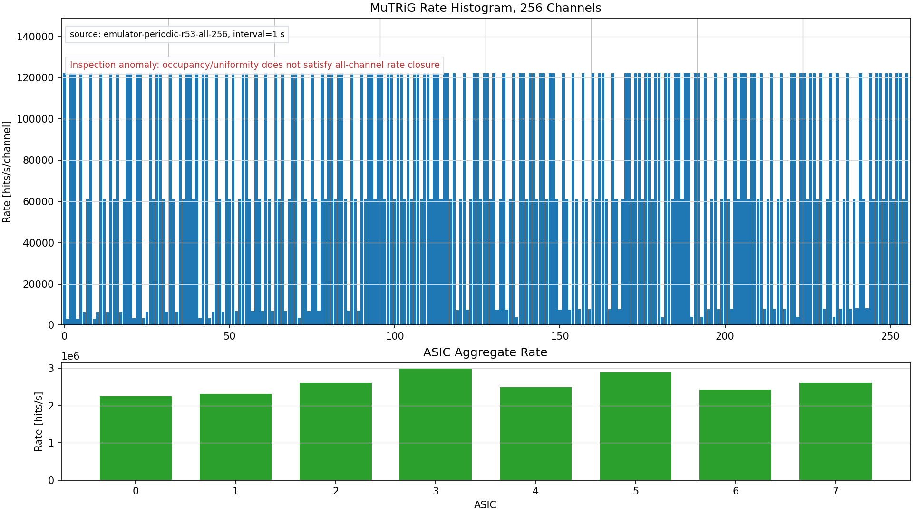
| Artifact | Status | Contract / Inspection | File |
|---|---|---|---|
| 1 s 256-bin rate histogram | ANOMALY | Precise per-channel/per-ASIC rate evidence from histogram bins. source=phase5_rate_per_channel_1s_20260501_real_full32_cml080_ph6_100k.csv; total=20,729,590; nonzero_bins=256; active_asics=8; rate_cv=0.463; uniformity=fail; preset=rate; ANOMALY: all 256 bins are populated, but the per-channel rate is not uniform enough for rate closure (CV=0.463, min=5196.0/s, max=99840.0/s). | phase5_rate_per_channel_1s.png |
| Header-sync delay histogram | PASS | Passing handle: one dominant delay bin, normally >=90% peak fraction. source=phase6_headsync_lane5_cnt52_vcd18_bypasslapse_jtag_nodisplay_20260501.csv; total=91,574; nonzero_bins=1; peak=100.000%; preset=delay_mts_both; ASIC5 52/18/25 bypass lapse: header-sync delay is delta-like; inspect the absolute delay offset and matching run-control state. | phase5_header_delay_histogram.png |
| Header-sync delay A/B comparison | ANOMALY | Physical-response check across production-lapse, bypass-lapse, and lane controls. preset=delay_mts_both; Comparison inspected: ASIC5 default and production-lapse tuned runs show sidebands, while ASIC5 bypass-lapse and ASIC6 default collapse to a single bin. This points at the MTS lapse/overflow transform before treating ASIC5 as physically unlocked. | phase5_header_delay_comparison.png |
Phase-6 Header-Sync Delay by ASIC
These DISLIN plots isolate one real MuTRiG ASIC at a time with the LVDS
lane mask and set header_channel=ASIC, so the header-sync
injector monitors the same active lane. The acceptance calculation is
explicit: bins with 0 <= delay <= 2000 estimate hits
entering rbCAM, while bins outside that range plus histogram
underflow/overflow estimate rbCAM ingress rejects. MTS discard below
1% is recorded as a fine-counter caveat, not the primary
reject metric.
{kind=link}
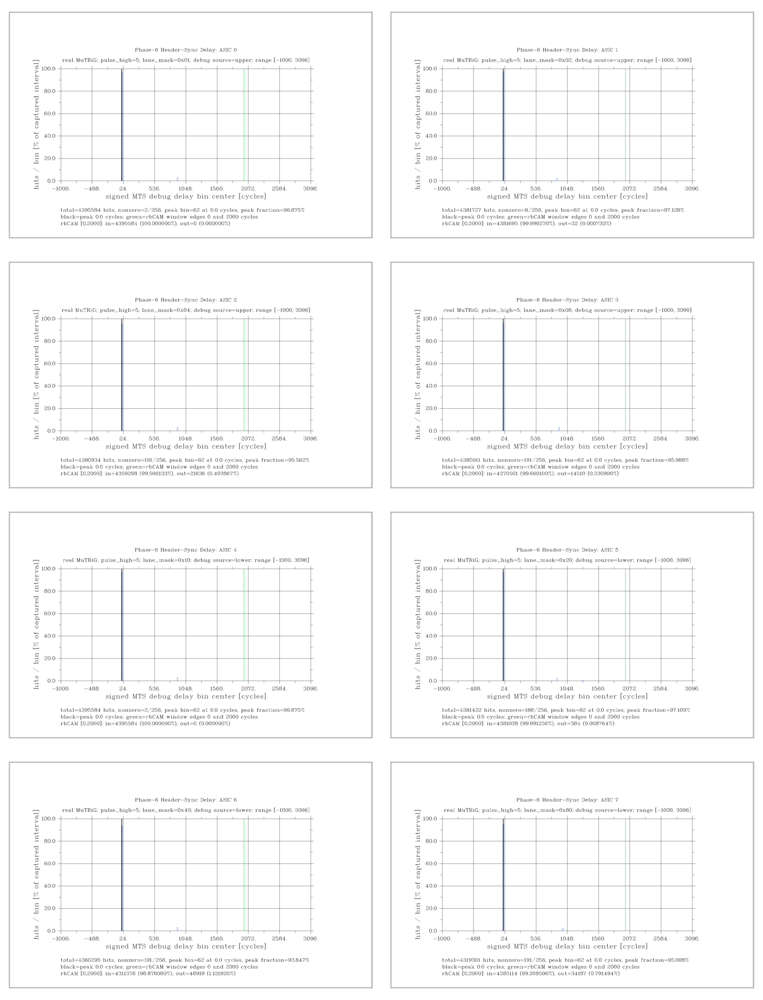
| ASIC | Status | Lane / Source | Total Delay Hits | Peak | 0..2000 In-Band | rbCAM Drop Proxy | <0 / >2000 Hits | UF / OF During 1 s | UF / OF During Read | MTS Discard | Ring InErr | Plot |
|---|---|---|---|---|---|---|---|---|---|---|---|---|
| 0 | PASS PASS | 0x01 header_ch=0; upper | 4,395,584 | 96.875000% | 100.000000% | 0.000000% | 0 / 0 | 0 / 0 | 0 / 0 | 0 0.000000% | 0 | phase6_header_delay_asic0_hsync_ph05_dislin.png |
| 1 | PASS PASS | 0x02 header_ch=1; upper | 4,381,727 | 97.128256% | 99.999270% | 0.017684% | 32 / 0 | 743 / 0 | 271 / 0 | 0 0.000000% | 0 | phase6_header_delay_asic1_hsync_ph05_dislin.png |
| 2 | PASS PASS | 0x04 header_ch=2; upper | 4,380,934 | 95.561654% | 99.506133% | 0.509355% | 21,196 / 440 | 682 / 0 | 266 / 0 | 0 0.000000% | 0 | phase6_header_delay_asic2_hsync_ph05_dislin.png |
| 3 | PASS PASS | 0x08 header_ch=3; upper | 4,385,011 | 95.987513% | 99.669100% | 0.343672% | 14,303 / 207 | 562 / 0 | 208 / 0 | 0 0.000000% | 0 | phase6_header_delay_asic3_hsync_ph05_dislin.png |
| 4 | PASS PASS | 0x10 header_ch=4; lower | 4,395,584 | 96.875000% | 100.000000% | 0.000000% | 0 / 0 | 0 / 0 | 0 / 0 | 0 0.000000% | 0 | phase6_header_delay_asic4_hsync_ph05_dislin.png |
| 5 | PASS PASS | 0x20 header_ch=5; lower | 4,381,422 | 97.109021% | 99.991236% | 0.025809% | 377 / 7 | 747 / 0 | 314 / 0 | 0 0.000000% | 0 | phase6_header_delay_asic5_hsync_ph05_dislin.png |
| 6 | ANOMALY PASS | 0x40 header_ch=6; lower | 4,360,295 | 93.847136% | 98.878080% | 1.158235% | 47,773 / 1,146 | 1,602 / 0 | 570 / 0 | 0 0.000000% | 0 | phase6_header_delay_asic6_hsync_ph05_dislin.png |
| 7 | PASS mts_discard_with_histogram_hits | 0x80 header_ch=7; lower | 4,319,301 | 95.008243% | 99.208506% | 0.838351% | 33,369 / 818 | 2,041 / 0 | 718 / 0 | 22,081 0.043549% | 0 | phase6_header_delay_asic7_hsync_ph05_dislin.png |
{kind=link}
{kind=link}
{kind=link}
{kind=link}
{kind=link}
{kind=link}
{kind=link}
{kind=link}
Phase-6 High-Cycle Rate Sweep
This is the post-histogram-26.1.8 real-MuTRiG rate-mode sweep requested
for pulse_high_cycles=1..15. Every plot is rendered by
DISLIN from the 1 s System Console histogram CSV, with one global channel
per bin and the 100 kHz target marked in red. Overfilled cases are
interpreted as physical injection-shape evidence: a non-optimal high
time can ring the TDC injection line and produce a second rising edge on
selected channels, so the measured rate may approach 2x or sit between
the single-edge and double-edge limits.
{kind=link}
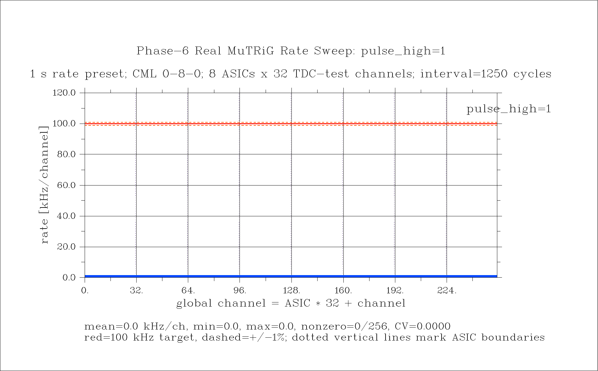
{kind=link}
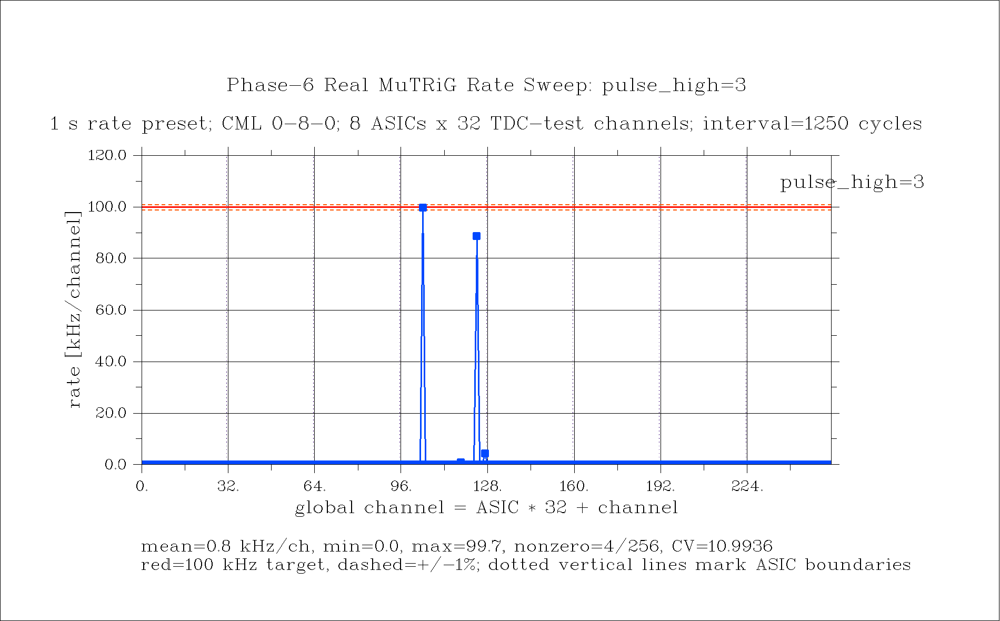
{kind=link}
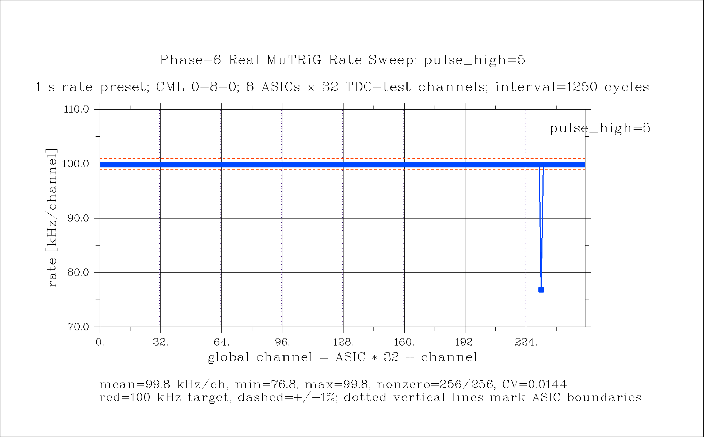
{kind=link}
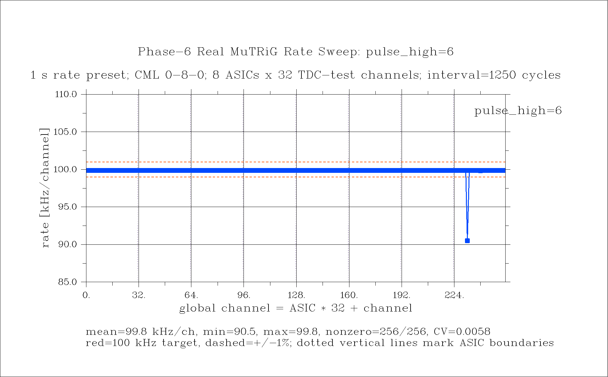
{kind=link}
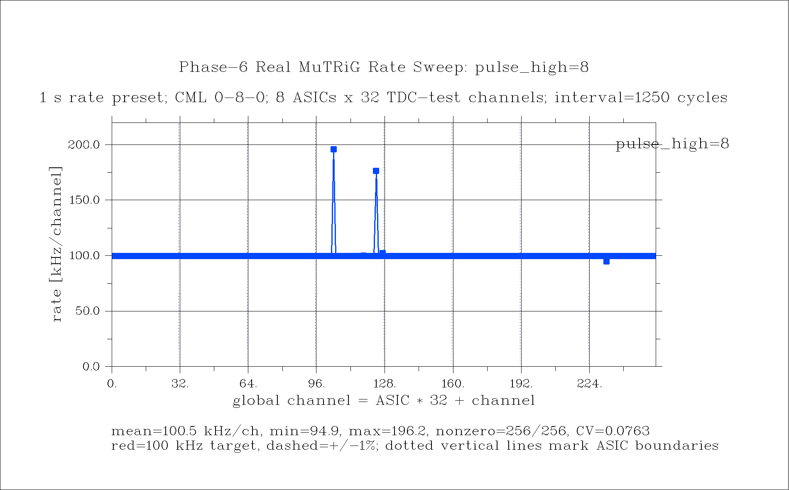
{kind=link}
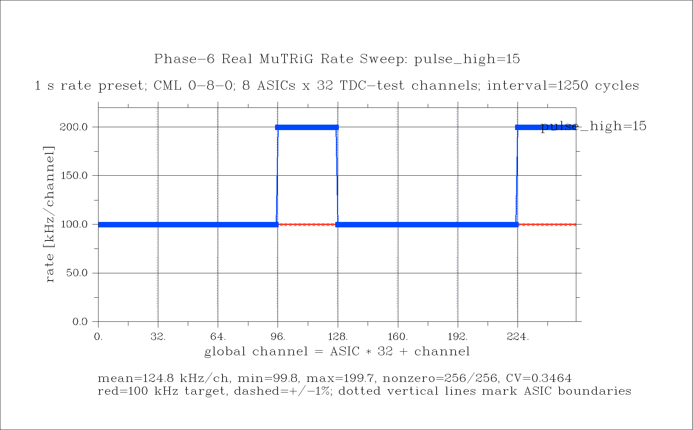
| Pulse High | Total Hits/s | Mean kHz/ch | Nonzero Channels | Min kHz/ch | Max kHz/ch | CV | Inspection | Plot |
|---|---|---|---|---|---|---|---|---|
| 1 | 0 | 0.000 | 0 | 0.000 | 0.000 | 0.0000 | silent | phase6_rate_per_channel_1s_ph01_dislin.png |
| 2 | 0 | 0.000 | 0 | 0.000 | 0.000 | 0.0000 | silent | phase6_rate_per_channel_1s_ph02_dislin.png |
| 3 | 193,461 | 0.756 | 4 | 0.000 | 99.658 | 10.9936 | underfilled | phase6_rate_per_channel_1s_ph03_dislin.png |
| 4 | 21,404,120 | 83.610 | 223 | 0.000 | 99.841 | 0.4329 | underfilled | phase6_rate_per_channel_1s_ph04_dislin.png |
| 5 | 25,536,088 | 99.750 | 256 | 76.830 | 99.841 | 0.0144 | rate plateau | phase6_rate_per_channel_1s_ph05_dislin.png |
| 6 | 25,549,931 | 99.804 | 256 | 90.525 | 99.841 | 0.0058 | rate plateau | phase6_rate_per_channel_1s_ph06_dislin.png |
| 7 | 25,550,213 | 99.806 | 256 | 91.085 | 99.840 | 0.0055 | rate plateau | phase6_rate_per_channel_1s_ph07_dislin.png |
| 8 | 25,729,880 | 100.507 | 256 | 94.932 | 196.165 | 0.0763 | overfilled; possible TDC-line ringing/double-edge pickup | phase6_rate_per_channel_1s_ph08_dislin.png |
| 9 | 28,284,536 | 110.486 | 256 | 99.840 | 193.480 | 0.1952 | overfilled; possible TDC-line ringing/double-edge pickup | phase6_rate_per_channel_1s_ph09_dislin.png |
| 10 | 28,967,327 | 113.154 | 256 | 91.236 | 199.590 | 0.2228 | overfilled; possible TDC-line ringing/double-edge pickup | phase6_rate_per_channel_1s_ph10_dislin.png |
| 11 | 30,603,255 | 119.544 | 256 | 99.839 | 199.681 | 0.2946 | overfilled; possible TDC-line ringing/double-edge pickup | phase6_rate_per_channel_1s_ph11_dislin.png |
| 12 | 31,393,140 | 122.629 | 256 | 98.851 | 199.680 | 0.3392 | overfilled; possible TDC-line ringing/double-edge pickup | phase6_rate_per_channel_1s_ph12_dislin.png |
| 13 | 31,948,742 | 124.800 | 256 | 99.837 | 199.680 | 0.3464 | overfilled; possible TDC-line ringing/double-edge pickup | phase6_rate_per_channel_1s_ph13_dislin.png |
| 14 | 31,948,368 | 124.798 | 256 | 99.837 | 199.678 | 0.3464 | overfilled; possible TDC-line ringing/double-edge pickup | phase6_rate_per_channel_1s_ph14_dislin.png |
| 15 | 31,948,587 | 124.799 | 256 | 99.834 | 199.680 | 0.3464 | overfilled; possible TDC-line ringing/double-edge pickup | phase6_rate_per_channel_1s_ph15_dislin.png |
{kind=link}
{kind=link}
{kind=link}
{kind=link}
{kind=link}
{kind=link}
{kind=link}
{kind=link}
{kind=link}
Phase-6 Mask Response
These are the requested pulse_high=5 physical-mask checks.
The ASIC set masks lanes in the LVDS controller and should remove whole
32-channel blocks. The channel set leaves all ASIC lanes enabled, reloads
every ASIC with the same random 32-bit TDC-test/channel mask, performs
the CML 0-8-0 flush, and should remove that repeated channel
pattern from each ASIC. The plots are DISLIN bar histograms from 1 s
System Console CSV captures.
{kind=link}
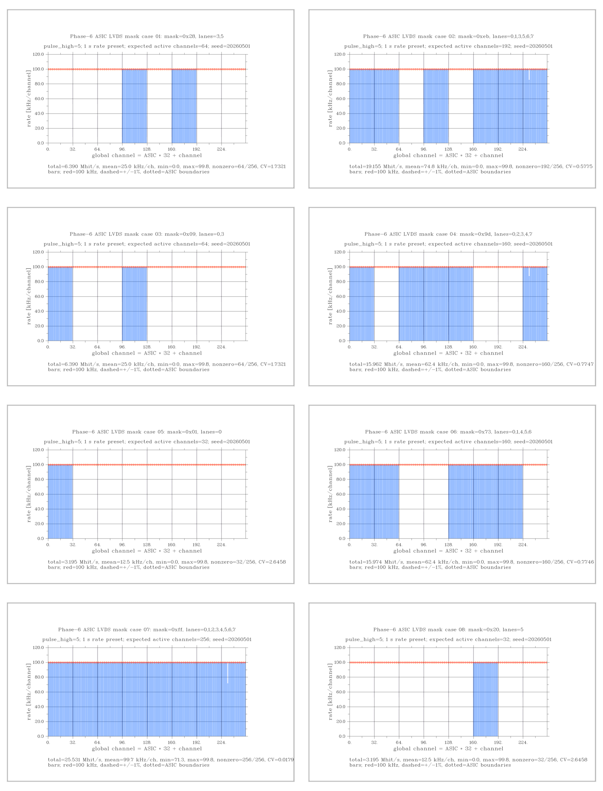
{kind=link}
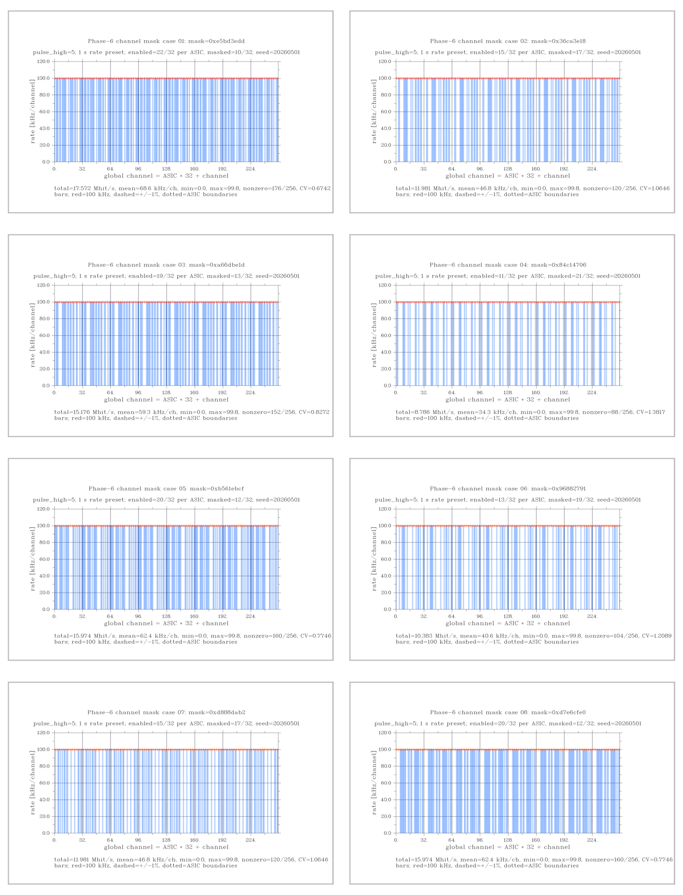
RAW CHECK 16/16 cases match the intended nonzero channel set exactly, 16/16 pass the 50k-count on-bin gate, max off-bin count is 0, and min on-bin count is 71284. Raw TSV: phase6_mask_response_raw_mask_check_seed20260501.tsv.
{kind=link}
{kind=link}
{kind=link}
{kind=link}
{kind=link}
{kind=link}
{kind=link}
{kind=link}
{kind=link}
{kind=link}
{kind=link}
{kind=link}
{kind=link}
{kind=link}
{kind=link}
{kind=link}
| Kind | Case | Expected On | Observed Nonzero | Observed >=50k | Max Off Count | Min On Count | Status |
|---|---|---|---|---|---|---|---|
| asic_lvds | 01 | 64 | 64 | 64 | 0 | 99,841 | PASS |
| asic_lvds | 02 | 192 | 192 | 192 | 0 | 85,270 | PASS |
| asic_lvds | 03 | 64 | 64 | 64 | 0 | 99,839 | PASS |
| asic_lvds | 04 | 160 | 160 | 160 | 0 | 87,200 | PASS |
| asic_lvds | 05 | 32 | 32 | 32 | 0 | 99,839 | PASS |
| asic_lvds | 06 | 160 | 160 | 160 | 0 | 99,839 | PASS |
| asic_lvds | 07 | 256 | 256 | 256 | 0 | 71,284 | PASS |
| asic_lvds | 08 | 32 | 32 | 32 | 0 | 99,840 | PASS |
| channel_mask | 01 | 176 | 176 | 176 | 0 | 99,839 | PASS |
| channel_mask | 02 | 120 | 120 | 120 | 0 | 99,840 | PASS |
| channel_mask | 03 | 152 | 152 | 152 | 0 | 99,840 | PASS |
| channel_mask | 04 | 88 | 88 | 88 | 0 | 99,840 | PASS |
| channel_mask | 05 | 160 | 160 | 160 | 0 | 99,840 | PASS |
| channel_mask | 06 | 104 | 104 | 104 | 0 | 99,840 | PASS |
| channel_mask | 07 | 120 | 120 | 120 | 0 | 99,841 | PASS |
| channel_mask | 08 | 160 | 160 | 160 | 0 | 99,840 | PASS |
Physical Debug Checklist
| Check | Expected Response | Current Checkpoint |
|---|---|---|
| Channel mask sanity | Masked channels vanish from the 256-bin rate plot while unmasked channels keep their rate scale. | The emulator mask matrix now passes upper-only, lower-only, and all-lane rate expectations on the fresh SOF. The real-MuTRiG pulse_high=5 mask-response sweep shows LVDS ASIC masks zero whole 32-channel blocks and random channel masks zero the repeated per-ASIC channel pattern, with enabled bins near 100 kHz/channel. ph6/ph7 remain the flattest full-rate starting point, while ph8+ expose likely TDC-line ringing/double-edge sidebands. |
| MuTRiG PLL/header-sync tuning | Starting from no-hit zero vcodelay, restore nonzero ASIC defaults, run RUN_PREPARE, and tune until the delay histogram moves from broad/flat toward one dominant bin. |
The lane-mask/header-channel scan now plots ASICs 0..7. The plotted acceptance handle is the rbCAM 0..2000 in-window ratio. Sub-1% MTS discard is marked as a fine-counter caveat instead of the main fail condition. |
| Upper/lower delay input coverage | Delay histograms must isolate both source 0 (upper MTS) and source 1 (lower MTS), with lower-side evidence covering ASICs 4..7. | The generated pipe Qsys connects mts_preprocessor_0.ts_delta to debug_1 and mts_preprocessor_1.ts_delta to debug_2. Upper ASICs 0..3 and lower ASICs 4..7 now have per-ASIC real plotted evidence using matched header_channel. |
| Histogram-bin capture method | Read all 256 bins from the completed interval before the ping-pong bank is overwritten, preferably by the burst System Console/toolkit path. | The histogram 26.1.8 fix repaired deferred frozen-bank reads. The current accepted plot source is the 1 s System Console histogram CSV; slow SC bin reads remain diagnostic-only under live traffic. |
| Anomaly loop | Every reviewed plot must state one anomaly or null anomaly and the next hardware hypothesis it supports. | Current anomaly: the all-eight scan has sharp in-window peaks, but several lanes still show histogram underflow while reading. Treat that as a tail/range diagnostic for rbCAM ingress loss, not as evidence that raw MTS discard is the root metric. |
MuTRiG Tuning Ledger
Triples are cnt/vcodelay/hitlogic. The zero point is a
no-hit control, not a sweep start that should produce valid data. After
every FEB reconfiguration, reload the SMB XMLs, run through
RUN_PREPARE, then compare head-sync delay histograms.
| ASIC | SMB | XML Default | Restore/Used | Diagnostic | Evidence | Head-Sync Plot |
|---|---|---|---|---|---|---|
| 0 | SMB3 | 48/20/30 | 48/20/40 | - | phase5_mutrig_restore_full32_tuned_baseline_20260430e.json | all-eight header-sync plot present; rbCAM drop proxy is 0.000000% |
| 1 | SMB3 | 43/30/30 | 43/30/30 | - | phase5_mutrig_restore_full32_tuned_baseline_20260430e.json | all-eight header-sync plot present; rbCAM drop proxy is 0.017684% including underflow |
| 2 | SMB3 | 45/35/20 | 40/30/30 | - | phase5_mutrig_restore_full32_tuned_baseline_20260430e.json | all-eight header-sync plot present; rbCAM drop proxy is 0.509355% including underflow |
| 3 | SMB3 | 41/10/20 | 35/12/25 | - | phase5_mutrig_restore_full32_tuned_baseline_20260430e.json | all-eight header-sync plot present; rbCAM drop proxy is 0.343672% including underflow |
| 4 | SMB5 | 43/15/20 | 43/15/20 | - | phase5_mutrig_restore_full32_tuned_baseline_20260430e.json | all-eight header-sync plot present; rbCAM drop proxy is 0.000000% |
| 5 | SMB5 | 42/20/25 | 52/18/25 | bypass-lapse delta; production-lapse sideband | phase6_headsync_lane5_cnt52_vcd18_bypasslapse_jtag_nodisplay_20260501.csv | comparison plot shows ASIC5 physical delta only when MTS lapse is bypassed; production lapse still splits 79/21 |
| 6 | SMB5 | 37/27/15 | 37/27/15 | default production-lapse delta | phase6_headsync_lane6_default_jtag_nodisplay_20260501.csv | all-eight header-sync plot is delta-like but rbCAM drop proxy is 1.158235%; tune/check sideband |
| 7 | SMB5 | 40/20/25 | 30/14/40 | - | phase5_mutrig_restore_full32_tuned_baseline_20260430e.json | all-eight header-sync plot present; rbCAM drop proxy is 0.838351%; MTS discard is a sub-1% fine-counter caveat |
Evidence Table
Counter rows show count plus rate. The rate window is the measured accumulation window for shaky CSR counters; linked JSON keeps the raw before/sample/after snapshots for audit. Rows shorter than 1 s are retained only as historical debug and fail the monitor gate.
| Kind | Run | Result | Scope | MTS Config | Monitor / Rate Window | MTS In / Drop | Hist In / Drop | RBCAM In / Out / Reject | FEB Assembly In / Miss | LVDS | Artifact |
|---|---|---|---|---|---|---|---|---|---|---|---|
| Config | Restore full tuned baseline All eight ASICs reloaded full-channel with the single-lane-clean PLL overrides. | PASS 8 / 8 configured | config - | - | unknown rate window missing | - - drop - - | - - drop - - | in - - out - - reject - - | in - - miss - - | - | phase5_mutrig_restore_full32_tuned_baseline_20260430e.json |
| Rate | All-real lanes 1 s rate monitor Fresh 1 s all-real-lane rate run: LVDS error/DPA deltas are zero and last-interval histogram total is nonzero, but MTS/ring errors remain and slow SC bin readback returned zero bins, so this is blocker evidence rather than a plotted-artifact pass. | FAIL mts_discard_with_histogram_hits | lvds=0x0FF emu=0x00 | lat=2000; lookback=keep; lapse=keep; drop=off; ts=t | 1000 ms 6.084 s | 38,828,554 6.383 M/s drop 1 0.164 /s | 11,851,571 210.419 k/s drop 0 0.000 /s | in 41,594,330 6.837 M/s out 41,594,178 6.837 M/s reject 2,866,875 471.247 k/s | in 45,734,763 7.518 M/s miss 0 0.000 /s | OK: errΔ=0, dpaΔ=0, active=[0, 1, 2, 3, 4, 5, 6, 7] | phase5_live_allreal_rate_1s_20260430.json |
| Rate plot | Emulator r53 1 s all-channel rate bins First JTAG/toolkit-style rate-bin capture with both histogram ingress bridges forced pre-RBCAM and all 256 bins nonzero. Histogram drops, MTS discards, and ring input timestamp errors are zero, but RBCAM overwrite/cache counters and rate uniformity are not clean enough for closure. | PASS PASS | lvds=0x1FF emu=0xFF | lat=None; lookback=None; lapse=keep; drop=keep; ts=keep | 1350 ms 11.068 s | 285,544,580 25.799 M/s drop 0 0.000 /s | 25,878,856 386.691 M/s drop 0 0.000 /s | in 286,168,740 25.855 M/s out 286,168,686 25.855 M/s reject 465,919 42.095 k/s | in 286,747,350 25.907 M/s miss 0 0.000 /s | snapshot missing | phase5_rate_per_channel_1s_20260501_allchan100k_emulator_periodic_r53.json |
| Phase6 emu | Emulator all lanes 10 kHz 1 s Freshly compiled/programmed full-FEB image sees all eight emulator lanes; physical mask expectation is eight-lane rate, zero histogram drops, zero MTS/ring errors. | PASS PASS | lvds=0x1FF emu=0xFF | lat=None; lookback=keep; lapse=keep; drop=keep; ts=keep | 1000 ms 3.831 s | 247,020 64.484 k/s drop 0 0.000 /s | 79,984 14.266 k/s drop 0 0.000 /s | in 269,856 70.446 k/s out 269,856 70.446 k/s reject 0 0.000 /s | in 292,952 76.475 k/s miss 0 0.000 /s | snapshot missing | phase6_histv7_emulator_all_rate10k_1s_lowerfix_20260501.json |
| Phase6 emu | Emulator upper-only 10 kHz 1 s Upper-side mask control sees four-lane rate only. | PASS PASS | lvds=0x1FF emu=0x0F | lat=None; lookback=keep; lapse=keep; drop=keep; ts=keep | 1000 ms 3.784 s | 122,768 32.447 k/s drop 0 0.000 /s | 39,996 6.940 k/s drop 0 0.000 /s | in 130,972 34.616 k/s out 130,972 34.616 k/s reject 0 0.000 /s | in 145,796 38.534 k/s miss 0 0.000 /s | snapshot missing | phase6_histv7_emulator_upper_rate10k_1s_lowerfix_20260501.json |
| Phase6 emu | Emulator lower-only 10 kHz 1 s Lower-side mask control now sees four-lane rate, proving the lower histogram bridge is live in the programmed image. | PASS PASS | lvds=0x1FF emu=0xF0 | lat=None; lookback=keep; lapse=keep; drop=keep; ts=keep | 1000 ms 3.801 s | 124,940 32.873 k/s drop 0 0.000 /s | 39,996 6.866 k/s drop 0 0.000 /s | in 140,448 36.954 k/s out 140,448 36.954 k/s reject 0 0.000 /s | in 148,576 39.092 k/s miss 0 0.000 /s | snapshot missing | phase6_histv7_emulator_lower_rate10k_1s_lowerfix_20260501.json |
| Phase6 emu | Emulator all lanes 100 kHz 1 s All eight emulator lanes pass the 100 kHz/channel smoke with zero histogram drops and zero MTS/ring rejects. | PASS PASS | lvds=0x1FF emu=0xFF | lat=None; lookback=keep; lapse=keep; drop=keep; ts=keep | 1000 ms 3.820 s | 2,465,060 645.252 k/s drop 0 0.000 /s | 798,728 151.202 k/s drop 0 0.000 /s | in 2,691,820 704.608 k/s out 2,691,808 704.605 k/s reject 0 0.000 /s | in 2,912,700 762.425 k/s miss 0 0.000 /s | snapshot missing | phase6_histv7_emulator_all_rate100k_1s_lowerfix_20260501.json |
| Phase6 emu | Emulator dual-MTS delay 100 kHz 1 s Delay-profile smoke exercises both upper and lower MTS debug sources; this is a wiring guard, not a real-MuTRiG PLL lock claim. | PASS PASS | lvds=0x1FF emu=0xFF | lat=None; lookback=keep; lapse=keep; drop=keep; ts=keep | 1000 ms 3.753 s | 2,419,092 644.592 k/s drop 0 0.000 /s | 409,080 109.004 k/s drop 0 0.000 /s | in 2,648,992 705.851 k/s out 2,648,984 705.849 k/s reject 0 0.000 /s | in 2,874,044 765.819 k/s miss 0 0.000 /s | snapshot missing | phase6_histv7_emulator_all_delay100k_1s_lowerfix_20260501.json |
| Header | ASIC5 head-sync default, lapse on JTAG 256-bin delay read shows a non-delta ASIC5 response under production MTS lapse: peak 44.914% with six nonzero bins. | PASS PASS | lvds=0x020 emu=0x00 | lat=2000; lookback=keep; lapse=keep; drop=off; ts=t | 1500 ms 12.984 s | 942,873 72.619 k/s drop 0 0.000 /s | 13,392 1.031 k/s drop 0 0.000 /s | in 977,291 75.270 k/s out 977,288 75.270 k/s reject 211 16.251 /s | in 995,924 76.705 k/s miss 0 0.000 /s | OK: errΔ=0, dpaΔ=0, active=[5] | phase6_headsync_lane5_default_jtag_nodisplay_20260501.json |
| Header | ASIC5 head-sync cnt52/vcd18, lapse on ASIC5 physical tuning improves the shape but production MTS lapse still leaves a two-bin 79.171%/20.829% split. | PASS PASS | lvds=0x020 emu=0x00 | lat=2000; lookback=keep; lapse=off; drop=off; ts=t | 1500 ms 12.931 s | 940,033 72.698 k/s drop 0 0.000 /s | 12,108 936.379 /s drop 0 0.000 /s | in 974,448 75.359 k/s out 974,448 75.359 k/s reject 986 76.253 /s | in 992,063 76.722 k/s miss 0 0.000 /s | OK: errΔ=0, dpaΔ=0, active=[5] | phase6_headsync_lane5_cnt52_vcd18_mtslat2000_jtag_nodisplay_20260501.json |
| Header diag | ASIC5 head-sync cnt52/vcd18, bypass lapse Diagnostic-only bypass-lapse run collapses ASIC5 to one delay bin, separating the physical TDC/LVDS response from the MTS lapse transform. | PASS PASS | lvds=0x020 emu=0x00 | lat=2000; lookback=keep; lapse=on; drop=off; ts=t | 1500 ms 12.939 s | 938,441 72.530 k/s drop 0 0.000 /s | 8,082 624.642 /s drop 0 0.000 /s | in 964,808 74.568 k/s out 964,806 74.568 k/s reject 1,177 90.968 /s | in 989,799 76.500 k/s miss 0 0.000 /s | OK: errΔ=0, dpaΔ=0, active=[5] | phase6_headsync_lane5_cnt52_vcd18_bypasslapse_jtag_nodisplay_20260501.json |
| Header | ASIC6 head-sync default, lapse on ASIC6 default production-lapse control is a single-bin delta at 904 cycles with zero LVDS error/DPA deltas. | PASS PASS | lvds=0x040 emu=0x00 | lat=2000; lookback=keep; lapse=keep; drop=off; ts=t | 1500 ms 12.979 s | 1,414,372 108.976 k/s drop 0 0.000 /s | 17,153 1.322 k/s drop 0 0.000 /s | in 1,465,983 112.952 k/s out 1,465,982 112.952 k/s reject 0 0.000 /s | in 1,492,862 115.023 k/s miss 0 0.000 /s | OK: errΔ=0, dpaΔ=0, active=[6] | phase6_headsync_lane6_default_jtag_nodisplay_20260501.json |
| Delay | Single-lane matrix Eight isolated lanes pass the 2000-cycle MTS/ring error gate. | PASS 8 / 8 pass | lvds=0x0FF emu=0x00 | aggregate; inspect child JSON | 250 ms; rerun 1 s rate window missing | 38,411,543 - drop 0 - | 9,019,570 - drop 0 - | in 43,022,057 - out 43,021,857 - reject 0 - | in 47,843,393 - miss 0 - | aggregate; inspect child JSON for lane table | phase5_real_256ch_per_lane_best2_pulse4_delay_2000cyc_20260429.json |
| Delay | All lanes together All-lane run still fails on ring input errors. | FAIL ring_input_errors_with_histogram_hits | lvds=0x0FF emu=0x00 | lat=2000; lookback=keep; lapse=keep; drop=keep; ts=t | 250 ms; rerun 1 s rate window missing | 39,898,636 - drop 0 - | 14,859,250 - drop 0 - | in 35,652,315 - out 35,652,230 - reject 36,028,969 - | in 40,079,631 - miss 0 - | not captured | phase5_real_256ch_all_lanes_best2_pulse4_delay_2000cyc_20260429.json |
| Delay | Upper lanes 1+2, one channel Passes when parked emulator lanes are disabled. | PASS PASS | lvds=0x006 emu=0x00 | lat=2000; lookback=keep; lapse=keep; drop=off; ts=t | 250 ms; rerun 1 s rate window missing | 487,254 - drop 0 - | 32,614 - drop 0 - | in 530,116 - out 530,116 - reject 0 - | in 609,164 - miss 0 - | not captured | phase5_real_upper_lanes12_ch1_quietemu_pulse4_delay_2000cyc_20260430.json |
| Delay | Upper lanes 1+2, full channels Fails only when full-channel multiplicity is restored. | FAIL ring_input_errors_with_histogram_hits | lvds=0x006 emu=0x00 | lat=2000; lookback=keep; lapse=keep; drop=keep; ts=t | 250 ms; rerun 1 s rate window missing | 13,565,966 - drop 0 - | 4,758,053 - drop 0 - | in 14,633,702 - out 14,633,590 - reject 385,489 - | in 16,813,579 - miss 0 - | not captured | phase5_real_upper_lanes12_best2_pulse4_delay_2000cyc_20260429.json |
| Delay | Lower lane 5, one channel Lane 5 alone passes. | PASS PASS | lvds=0x020 emu=0x00 | lat=2000; lookback=keep; lapse=keep; drop=off; ts=t | 250 ms; rerun 1 s rate window missing | 174,690 - drop 0 - | 61,790 - drop 0 - | in 202,843 - out 202,841 - reject 0 - | in 216,467 - miss 0 - | not captured | phase5_real_lane5_ch1_goodribbon_pulse4_delay_2000cyc_20260430.json |
| Delay | Lower lane 6, one channel Lane 6 alone passes. | PASS PASS | lvds=0x040 emu=0x00 | lat=2000; lookback=keep; lapse=keep; drop=off; ts=t | 250 ms; rerun 1 s rate window missing | 247,339 - drop 0 - | 68,986 - drop 0 - | in 285,991 - out 285,990 - reject 0 - | in 307,500 - miss 0 - | not captured | phase5_real_lane6_ch1_goodribbon_pulse4_delay_2000cyc_20260430.json |
| Delay | Lower lanes 5+6, one channel This early good-ribbon pass is now superseded by the timing-closed Phase-6 image, where explicit SMB5 reload reproduced the lower one-channel MTS/ring failure. | PASS PASS | lvds=0x060 emu=0x00 | lat=2000; lookback=keep; lapse=keep; drop=off; ts=t | 250 ms; rerun 1 s rate window missing | 419,896 - drop 0 - | 70,935 - drop 0 - | in 483,956 - out 483,954 - reject 0 - | in 532,836 - miss 0 - | not captured | phase5_real_lower_lanes56_ch1_goodribbon_latency2000_retry_pulse4_20260430.json |
| Phase6 | Lower ASIC5/6 cross-ASIC sweep ASIC5/lane5 and ASIC6/lane6 pass alone, the real two-lane pair fails, ASIC6 ext_trig_offset 0..15 does not clear it, and the two-lane emulator reference passes after settle. | FAIL 7 / 30 pass | lvds=0x060 emu=0x60 | aggregate; inspect child JSON | 100 ms; rerun 1 s rate window missing | 9,766,799 - drop 0 - | 1,640,203 - drop 0 - | in 0 - out 0 - reject 10,506,955 - | in 9,426,601 - miss 0 - | aggregate; inspect child JSON for lane table | phase6_lower56_cross_asic_sweep_20260430.json |
| Phase6 | Phase-6 continued bounded cycle P6B006 Fresh ASIC5/lane5 one-channel control passes with zero ring input errors. | PASS PASS | lvds=0x020 emu=0x00 | lat=2000; lookback=keep; lapse=keep; drop=off; ts=t | 250 ms; rerun 1 s rate window missing | 168,411 - drop 0 - | 52,627 - drop 0 - | in 198,382 - out 198,382 - reject 0 - | in 213,120 - miss 0 - | OK: errΔ=0, dpaΔ=0, active=[5] | phase6_long_runs/20260430_live_continued_cycle1/cases/cycle00000_P6B006.json |
| Phase6 | Phase-6 continued bounded cycle P6B007 Fresh ASIC6/lane6 one-channel control passes with zero ring input errors. | PASS PASS | lvds=0x040 emu=0x00 | lat=2000; lookback=keep; lapse=keep; drop=off; ts=t | 250 ms; rerun 1 s rate window missing | 247,011 - drop 0 - | 81,880 - drop 0 - | in 296,487 - out 296,487 - reject 0 - | in 320,820 - miss 0 - | OK: errΔ=0, dpaΔ=0, active=[6] | phase6_long_runs/20260430_live_continued_cycle1/cases/cycle00000_P6B007.json |
| Phase6 | Phase-6 continued bounded cycle P6B010 Fresh ASIC5+6 one-channel pair still fails before SWB with ring input errors. | FAIL ring_input_errors_with_histogram_hits | lvds=0x060 emu=0x00 | lat=2000; lookback=keep; lapse=keep; drop=off; ts=t | 250 ms; rerun 1 s rate window missing | 440,880 - drop 0 - | 144,364 - drop 0 - | in 365,537 - out 365,534 - reject 563,053 - | in 390,663 - miss 0 - | OK: errΔ=0, dpaΔ=0, active=[5, 6] | phase6_long_runs/20260430_live_continued_cycle1/cases/cycle00000_P6B010.json |
| Latency | Lower lanes 5+6 one-channel latency 2000 Nominal 0..2000-cycle expected-latency gate fails for the two-real-ASIC lower pair. | FAIL ring_input_errors_with_histogram_hits | lvds=0x060 emu=0x00 | lat=2000; lookback=keep; lapse=keep; drop=off; ts=t | 250 ms; rerun 1 s rate window missing | 413,458 - drop 0 - | 118,260 - drop 0 - | in 346,657 - out 346,656 - reject 534,743 - | in 371,371 - miss 0 - | OK: errΔ=0, dpaΔ=0, active=[5, 6] | phase6_probe_lower56_ch1_latency2000_pulse4_20260430.json |
| Latency | Lower lanes 5+6 one-channel latency 4000 Opening the expected-latency gate to 4000 cycles does not clear the lower-pair failure. | FAIL ring_input_errors_with_histogram_hits | lvds=0x060 emu=0x00 | lat=4000; lookback=keep; lapse=keep; drop=off; ts=t | 250 ms; rerun 1 s rate window missing | 412,183 - drop 0 - | 50,771 - drop 0 - | in 384,886 - out 384,883 - reject 368,030 - | in 410,453 - miss 0 - | OK: errΔ=0, dpaΔ=0, active=[5, 6] | phase6_probe_lower56_ch1_latency4000_pulse4_20260430.json |
| Latency | Lower lanes 5+6 one-channel latency 65535 Even an effectively wide positive-latency gate leaves ring input errors, pointing away from a small positive delay tail. | FAIL ring_input_errors_with_histogram_hits | lvds=0x060 emu=0x00 | lat=65535; lookback=keep; lapse=keep; drop=off; ts=t | 250 ms; rerun 1 s rate window missing | 429,181 - drop 0 - | 155,387 - drop 0 - | in 413,714 - out 413,713 - reject 319,653 - | in 442,754 - miss 0 - | OK: errΔ=0, dpaΔ=0, active=[5, 6] | phase6_probe_lower56_ch1_latency65535_pulse4_20260430.json |
| Header | Lower lanes 5+6 header mode channel 5 Header-synchronous injection on lower header channel 5 still fails for the real pair. | FAIL ring_input_errors_with_histogram_hits | lvds=0x060 emu=0x00 | lat=2000; lookback=keep; lapse=keep; drop=off; ts=t | 250 ms; rerun 1 s rate window missing | 576,765 - drop 0 - | 160,595 - drop 0 - | in 486,128 - out 486,126 - reject 748,701 - | in 522,845 - miss 0 - | OK: errΔ=0, dpaΔ=0, active=[5, 6] | phase6_probe_lower56_ch1_header_ch5_hdelay100_pulse4_20260430.json |
| Header | Lower lanes 5+6 header mode channel 6 Header-synchronous injection on lower header channel 6 still fails for the real pair. | FAIL ring_input_errors_with_histogram_hits | lvds=0x060 emu=0x00 | lat=2000; lookback=keep; lapse=keep; drop=off; ts=t | 250 ms; rerun 1 s rate window missing | 608,355 - drop 0 - | 179,877 - drop 0 - | in 508,235 - out 508,233 - reject 782,985 - | in 543,743 - miss 0 - | OK: errΔ=0, dpaΔ=0, active=[5, 6] | phase6_probe_lower56_ch1_header_ch6_hdelay100_pulse4_20260430.json |
| Header | Lane 5 header mode control ASIC5/lane5 alone passes the same header-synchronous mode, so the mode itself is not the blocker. | PASS PASS | lvds=0x020 emu=0x00 | lat=2000; lookback=keep; lapse=keep; drop=off; ts=t | 250 ms; rerun 1 s rate window missing | 234,526 - drop 0 - | 72,758 - drop 0 - | in 272,768 - out 272,768 - reject 0 - | in 293,388 - miss 0 - | OK: errΔ=0, dpaΔ=0, active=[5] | phase6_probe_lane5_ch1_header_hdelay100_pulse4_20260430.json |
| Header | Lane 6 header mode control ASIC6/lane6 alone passes the same header-synchronous mode, so the pair failure is cross-ASIC. | PASS PASS | lvds=0x040 emu=0x00 | lat=2000; lookback=keep; lapse=keep; drop=off; ts=t | 250 ms; rerun 1 s rate window missing | 366,132 - drop 0 - | 38,614 - drop 0 - | in 422,300 - out 422,299 - reject 0 - | in 453,985 - miss 0 - | OK: errΔ=0, dpaΔ=0, active=[6] | phase6_probe_lane6_ch1_header_hdelay100_pulse4_20260430.json |
| Phase6 | Lane 6 zero VCO point Invalidated: vnvcodelay=0 should produce no TDC-injection hits; rerun with nonzero ASIC-specific PLL settings and RUN_PREP. | INVALID zero-vcodelay no-hit control; rerun required | lvds=0x040 emu=0x00 | lat=2000; lookback=keep; lapse=keep; drop=off; ts=t | 250 ms; rerun 1 s rate window missing | 261,411 - drop 0 - | 19,591 - drop 0 - | in 301,193 - out 301,193 - reject 0 - | in 322,626 - miss 0 - | OK: errΔ=0, dpaΔ=0, active=[6] | phase6_lane6_vco000_pulse4_100k_20260430_192903.json |
| Phase6 | Lane 6 FEB frame boundary Invalidated as tuning evidence by the vco000 label; keep only as a frame-format debug example until rerun with locked nonzero PLL settings. | INVALID zero-vcodelay no-hit control; rerun required | lvds=0x040 emu=0x00 | lat=2000; lookback=keep; lapse=keep; drop=off; ts=t | 5000 ms rate window missing | 733,764 - drop 0 - | 59,907 - drop 0 - | in 771,792 - out 771,792 - reject 0 - | in 795,708 - miss 0 - | OK: errΔ=0, dpaΔ=0, active=[6] | phase6_frame_boundary_lane6_vco000_100k_active_inject_20260430.json |
| Phase6 | Lane 7 zero VCO point Invalidated: zero vcodelay is the no-hit control, not a lock point. | INVALID zero-vcodelay no-hit control; rerun required | lvds=0x080 emu=0x00 | lat=2000; lookback=keep; lapse=keep; drop=off; ts=t | 250 ms; rerun 1 s rate window missing | 250,568 - drop 0 - | 78,658 - drop 0 - | in 289,976 - out 289,975 - reject 0 - | in 310,436 - miss 0 - | OK: errΔ=0, dpaΔ=0, active=[7] | phase6_lane7_vco000_pulse4_100k_20260430_193008.json |
| Phase6 | Lanes 6+7 zero VCO pair Invalidated for PLL/timestamp conclusions until rerun from ASIC-specific nonzero defaults/restores after RUN_PREP. | INVALID zero-vcodelay no-hit control; rerun required | lvds=0x0C0 emu=0x00 | lat=2000; lookback=keep; lapse=keep; drop=off; ts=t | 250 ms; rerun 1 s rate window missing | 515,946 - drop 0 - | 170,444 - drop 0 - | in 387,881 - out 387,875 - reject 826,978 - | in 418,679 - miss 0 - | OK: errΔ=0, dpaΔ=0, active=[6, 7] | phase6_lane67_vco000_pulse4_100k_20260430_193112.json |
| Delay | Lower lanes 5+6, full channels Fresh post-restore full 32-channel ASIC5+6 run fails the required 0..2000-cycle MTS/ring gate. | FAIL ring_input_errors_with_histogram_hits | lvds=0x060 emu=0x00 | lat=2000; lookback=keep; lapse=off; drop=off; ts=t | 250 ms; rerun 1 s rate window missing | 9,859,630 - drop 0 - | 1,415,471 - drop 0 - | in 10,900,391 - out 10,900,318 - reject 1,990,485 - | in 11,694,757 - miss 0 - | not captured | phase5_real_lower_lanes56_full32_postrestore_latency2000_pulse4_20260430.json |
| Delay | Lower full channels, loose latency Still fails even with expected latency opened to 65535, so this is not a small positive-latency tail. | FAIL ring_input_errors_with_histogram_hits | lvds=0x060 emu=0x00 | lat=65535; lookback=keep; lapse=keep; drop=off; ts=t | 250 ms; rerun 1 s rate window missing | 9,762,363 - drop 0 - | 1,372,359 - drop 0 - | in 10,975,998 - out 10,975,994 - reject 996,634 - | in 11,790,695 - miss 0 - | not captured | phase5_real_lower_lanes56_full32_latency65535_pulse4_20260430.json |
| Diagnostic | Lower pair bypass-lapse Disabling the MTS GTS/lapse transform does not clear the lower-pair timestamp errors. | FAIL ring_input_errors_with_histogram_hits | lvds=0x060 emu=0x00 | lat=2000; lookback=keep; lapse=on; drop=off; ts=t | 250 ms; rerun 1 s rate window missing | 9,889,398 - drop 0 - | 1,445,038 - drop 0 - | in 4,806,691 - out 4,806,659 - reject 26,103,431 - | in 5,155,190 - miss 0 - | not captured | phase5_real_lower_lanes56_full32_bypasslapse_latency2000_pulse4_20260430.json |
| Diagnostic | Lower pair E-field delay Using E instead of T for delay calculation is worse, matching the short-mode TDC-injection expectation. | FAIL ring_input_errors_with_histogram_hits | lvds=0x060 emu=0x00 | lat=2000; lookback=keep; lapse=off; drop=off; ts=e | 250 ms; rerun 1 s rate window missing | 9,816,920 - drop 0 - | 1,993,029 - drop 0 - | in 6,666,648 - out 6,666,576 - reject 18,496,961 - | in 7,207,838 - miss 0 - | not captured | phase5_real_lower_lanes56_full32_delayfieldE_latency2000_pulse4_20260430.json |
| Diagnostic | Lower pair drop-delay Dropping MTS delay-error hits keeps the downstream ring clean, but this is diagnostic-only and not closure. | FAIL diagnostic_bypass_clean_not_closure | lvds=0x060 emu=0x00 | lat=2000; lookback=keep; lapse=off; drop=on; ts=t | 250 ms; rerun 1 s rate window missing | 9,698,941 - drop 0 - | 989,582 - drop 0 - | in 10,726,667 - out 10,726,659 - reject 0 - | in 11,522,626 - miss 0 - | not captured | phase5_real_lower_lanes56_full32_dropdelay_latency2000_pulse4_20260430.json |
| Mask scan | Lower channels 0..3 A four-channel mask can pass, proving full-channel failure is not a universal lane lock loss. | PASS PASS | lvds=0x060 emu=0x00 | lat=2000; lookback=keep; lapse=keep; drop=off; ts=t | 200 ms; rerun 1 s rate window missing | 1,441,962 - drop 0 - | 251,283 - drop 0 - | in 1,670,307 - out 1,670,301 - reject 0 - | in 1,788,513 - miss 0 - | not captured | phase5_real_lower_lanes56_chmask_00_03_latency2000_pulse4_20260430.json |
| Mask scan | Lower channels 4..7 This adjacent four-channel mask fails, showing channel grouping still matters. | FAIL ring_input_errors_with_histogram_hits | lvds=0x060 emu=0x00 | lat=2000; lookback=keep; lapse=keep; drop=off; ts=t | 200 ms; rerun 1 s rate window missing | 1,203,353 - drop 0 - | 186,678 - drop 0 - | in 1,394,986 - out 1,394,981 - reject 16,910 - | in 1,507,412 - miss 0 - | not captured | phase5_real_lower_lanes56_chmask_04_07_latency2000_pulse4_20260430.json |
| Mask scan | Lower pass-union mask The union of individually clean channel groups still fails when aggregated across ASIC5+6. | FAIL ring_input_errors_with_histogram_hits | lvds=0x060 emu=0x00 | lat=2000; lookback=keep; lapse=keep; drop=off; ts=t | 250 ms; rerun 1 s rate window missing | 6,645,781 - drop 0 - | 1,004,562 - drop 0 - | in 7,421,673 - out 7,421,622 - reject 1,281,072 - | in 7,956,847 - miss 0 - | not captured | phase5_real_lower_lanes56_chmask_pass_union_latency2000_pulse4_20260430.json |
| Delay | Lane 5 full channels ASIC5/lane5 passes full 32 channels by itself with vnhitlogic=60. | PASS PASS | lvds=0x020 emu=0x00 | lat=2000; lookback=keep; lapse=keep; drop=off; ts=t | 250 ms; rerun 1 s rate window missing | 5,624,703 - drop 0 - | 697,532 - drop 0 - | in 6,481,163 - out 6,481,163 - reject 0 - | in 6,960,247 - miss 0 - | not captured | phase5_real_lane5_full32_hl60_latency2000_pulse4_20260430.json |
| Delay | Lane 6 full channels ASIC6/lane6 passes full 32 channels by itself with vnhitlogic=60. | PASS PASS | lvds=0x040 emu=0x00 | lat=2000; lookback=keep; lapse=keep; drop=off; ts=t | 250 ms; rerun 1 s rate window missing | 3,657,580 - drop 0 - | 322,500 - drop 0 - | in 4,209,481 - out 4,209,448 - reject 0 - | in 4,521,434 - miss 0 - | not captured | phase5_real_lane6_full32_hl60_latency2000_pulse4_20260430.json |
| Tune | Lower pair hitlogic 60 Raising vnhitlogic on both ASICs does not clear the pair-level full-channel failure. | FAIL ring_input_errors_with_histogram_hits | lvds=0x060 emu=0x00 | lat=2000; lookback=keep; lapse=keep; drop=off; ts=t | 200 ms; rerun 1 s rate window missing | 8,942,039 - drop 0 - | 1,992,215 - drop 0 - | in 10,065,208 - out 10,065,133 - reject 1,551,965 - | in 10,783,606 - miss 0 - | not captured | phase5_real_lower_lanes56_full32_hl60_latency2000_pulse4_20260430.json |
| Pulse edge | Lower pulse3 hitlogic 10 Pulse high 3 with vnhitlogic=10 is clean but far below full 32-channel multiplicity. | PASS PASS | lvds=0x060 emu=0x00 | lat=2000; lookback=keep; lapse=off; drop=off; ts=t | 250 ms; rerun 1 s rate window missing | 171,878 - drop 0 - | 33,364 - drop 0 - | in 200,211 - out 200,211 - reject 0 - | in 214,543 - miss 0 - | not captured | phase5_real_lower_lanes56_full32_hl10_latency2000_pulse3_20260430.json |
| Pulse edge | Lower pulse3 hitlogic 5 Lowering hitlogic to 5 remains clean but still underfilled. | PASS PASS | lvds=0x060 emu=0x00 | lat=2000; lookback=keep; lapse=off; drop=off; ts=t | 250 ms; rerun 1 s rate window missing | 166,676 - drop 0 - | 27,986 - drop 0 - | in 193,469 - out 193,467 - reject 0 - | in 207,254 - miss 0 - | not captured | phase5_real_lower_lanes56_full32_hl5_latency2000_pulse3_20260430.json |
| Pulse edge | Lower pulse4 hitlogic 5 The next integer pulse width restores multiplicity but also restores MTS/ring errors. | FAIL mts_discard_with_histogram_hits | lvds=0x060 emu=0x00 | lat=2000; lookback=keep; lapse=off; drop=off; ts=t | 250 ms; rerun 1 s rate window missing | 10,008,663 - drop 1 - | 1,276,457 - drop 0 - | in 10,996,662 - out 10,996,625 - reject 1,810,661 - | in 11,818,666 - miss 0 - | not captured | phase5_real_lower_lanes56_full32_hl5_latency2000_pulse4_20260430.json |
| Pulse edge | Lower pulse3 cml_sc=1 The wiki cml_sc=1 setting moves pulse3 farther away from the required multiplicity. | PASS PASS | lvds=0x060 emu=0x00 | lat=2000; lookback=keep; lapse=off; drop=off; ts=t | 250 ms; rerun 1 s rate window missing | 18,827 - drop 0 - | 884 - drop 0 - | in 21,335 - out 21,335 - reject 0 - | in 22,115 - miss 0 - | not captured | phase5_real_lower_lanes56_full32_hl10_cmlsc1_latency2000_pulse3_20260430.json |
| Tune | Lower pair at 10 kHz/channel Even 10 kHz/channel still fails, so the blocker is not only 100 kHz steady-state throughput. | FAIL ring_input_errors_with_histogram_hits | lvds=0x060 emu=0x00 | lat=2000; lookback=keep; lapse=keep; drop=off; ts=t | 250 ms; rerun 1 s rate window missing | 976,942 - drop 0 - | 209,417 - drop 0 - | in 1,085,501 - out 1,085,490 - reject 187,920 - | in 1,164,544 - miss 0 - | not captured | phase5_real_lower_lanes56_full32_hl60_latency2000_pulse4_interval12500_20260430.json |
| Tune | ASIC5 ext offset Header ext_trig_offset=1 on ASIC5 makes the full-channel pair worse, not better. | FAIL ring_input_errors_with_histogram_hits | lvds=0x060 emu=0x00 | lat=2000; lookback=keep; lapse=keep; drop=off; ts=t | 250 ms; rerun 1 s rate window missing | 9,572,470 - drop 0 - | 1,946,625 - drop 0 - | in 10,629,063 - out 10,629,061 - reject 1,843,426 - | in 11,369,421 - miss 0 - | not captured | phase5_real_lower_lanes56_full32_asic5_extoffset1_latency2000_pulse4_20260430.json |
| Tune | ASIC6 ext offset Header ext_trig_offset=1 on ASIC6 also worsens the full-channel pair. | FAIL ring_input_errors_with_histogram_hits | lvds=0x060 emu=0x00 | lat=2000; lookback=keep; lapse=keep; drop=off; ts=t | 250 ms; rerun 1 s rate window missing | 10,004,262 - drop 0 - | 1,902,645 - drop 0 - | in 11,089,755 - out 11,089,683 - reject 1,924,333 - | in 11,835,435 - miss 0 - | not captured | phase5_real_lower_lanes56_full32_asic6_extoffset1_latency2000_pulse4_20260430.json |